Pioneer Family History Series
From Many Lands Twelve pioneer families who joined the Church and gathered to Utah, told for children. Every story is true and comes from the family’s own records. Tap a book to read it.
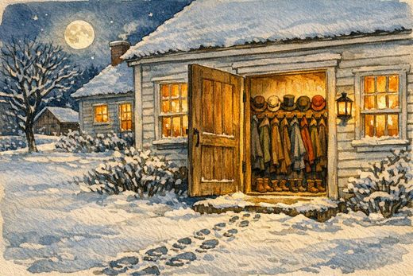
Twelve Men at the Door Erastus Bingham and Lucinda Gates 12 pages 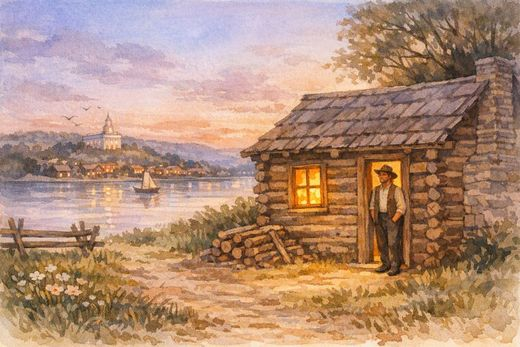
The Prophet Under the Bed Lewis Dunbar Wilson and Nancy Ann Waggoner 12 pages 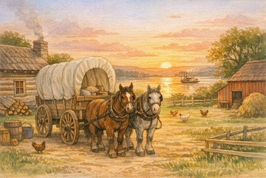
The Wagon in the Yard Ebenezer Wiggins and Eleanor Moore 12 pages 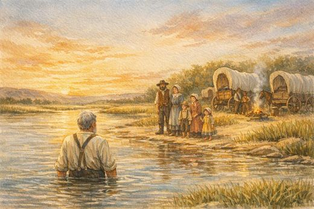
The Promise in the River Edward Farley Jr. and Mary Ann Moore 13 pages 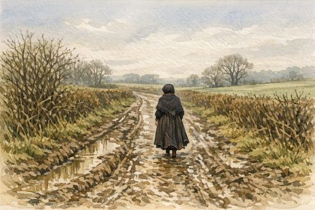
Eight Miles in the Mud John and Jane Hastings 13 pages 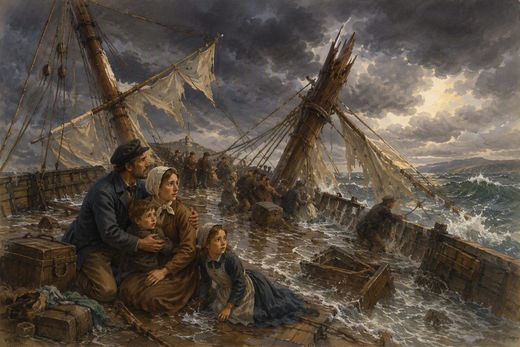
The Broken Ship Robert and Mary Ann Aldous 16 pages 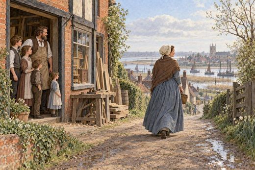
The Mother Who Led George Stratford and Eliza Barwell 16 pages Two Strangers at the River Marianna Crabb and Edwin Stratford 13 pages 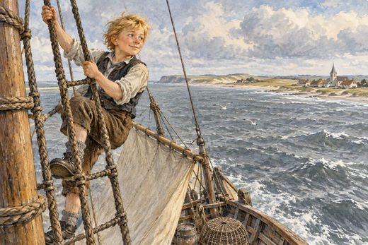
The Boy Who Climbed the Rigging Jens Nielsen and Ane Margrethe Pedersdatter 16 pages 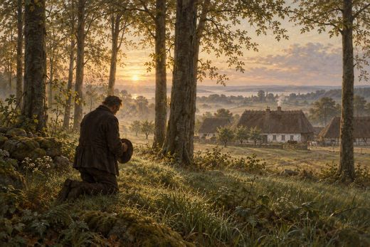
A Promise in the Grove Hans Andersen and Maren Jensen 16 pages 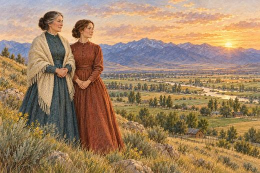
Two Women, One Name Anna Barbara Briener and Anna Barbara Keller 15 pages 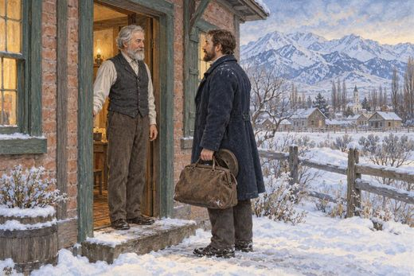
The Brother Who Was Waiting Julius Friedrich Hinrich Stender 15 pages
Prepared for the Bingham Family Reunion, 2026. Companion to The Covenant Path From Many Lands .